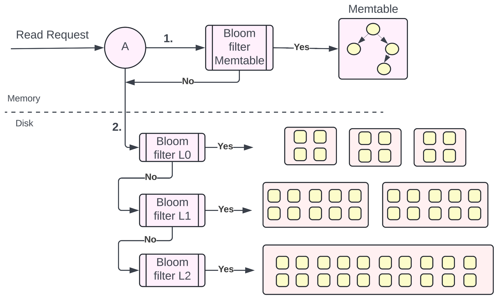
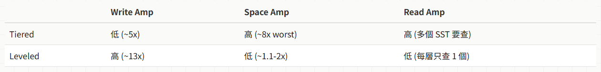

LSM-Tree

LSM-Tree
Reference:
Classification
Key Word Definition/ Discussion
LSM-Tree
- 核心哲學：磁碟（無論是 HDD 還是 SSD）的順序寫入吞吐量遠高於隨機寫入。LSM-Tree 透過延遲寫入與歸併排序（Merge Sort）來換取極高的寫入頻寬。
- 層級結構：通常分為記憶體層（Memtable）與磁碟多層級（SSTables）。
- 與 SSD 的契合度：其「不原地更新」的特性與 SSD 內部 FTL（Flash Translation Layer）的運作邏輯高度一致，能減少 SSD 的磨損並提升壽命。


三個放大鏡
Write amp、read amp、space amp 三者無法同時最小化。
ScyllaDB 的工程師做了一個很有意思的實驗：對同一組 1.2 GB 的資料反覆 overwrite 15 次，比較兩種策略：

Tiered 的 space amplification 膨脹到了將近 8 倍，因為舊版本散落在多個 SSTable 裡遲遲沒被清掉。Leveled 則控制在 2 倍以內。 但 write amplification 剛好反過來。寫入 8.8 GB 資料，tiered 實際寫了 50 GB（write amp ~5x），leveled 實際寫了 111 GB（write amp ~13x）。Leveled 的 write amp 是 tiered 的 2 倍以上。


選哪種取決於你的 workload。Write-intensive 用 tiered。Read-intensive 或 space-sensitive 用 leveled。
補充資料：ScyllaDB: Leveled Compaction（重點看 space amp 和 write amp 的實測圖表），以及 mini-lsm tutorial（有完整的 tiered 和 leveled 觸發條件和程式碼）。
Memtable
實作方式：為了兼顧插入效率與排序，常見實作包括Skip List（如 LevelDB/RocksDB）或 Red-Black Tree。
WAL 配合：為了防止當機導致記憶體資料遺失，寫入 Memtable 的同時會先 append 到磁碟的 Write-Ahead Log (WAL)。
操作複雜度：寫入與查詢的時間複雜度均為 O(log n)。
SSTable
- 內部結構：通常包含 Data Block（存放資料）、Index Block（存放 Data Block 的偏移量）以及 Footer。
- 高效查詢：由於檔案內部有序，可以使用 Binary Search 快速定位資料塊。
- 不可變性：一旦寫入磁碟就再也不會修改，更新操作是透過寫入「新版本」來達成。
Sorted run
- 讀取優化：在一個 Sorted Run 中查詢時，你只需要檢查一個檔案（或一個層級的一個位置），因為你知道 Key 不會重複出現在同一個 Run 的其他地方。
- 層級關係：在 Leveled Compaction 中，每一層（Level 1 以上）都是一個大的 Sorted Run。
Flush
- 觸發條件：通常是 Memtable 達到預設大小（例如 64 MB）。
- 效能點：Flush 是一個純順序寫入的操作，速度極快。
- 資源回收：Flush 完成後，對應的 WAL 檔案會被刪除，記憶體空間會被釋放。
Compaction
- 功能：
- 清除過期的舊版本資料。
- 處理 Tombstones（物理刪除已標記刪除的資料）。
- 減少 SSTable 數量以降低讀取放大。
- 本質：本質上是多路歸併排序（Multi-way Merge Sort）。
Leveled compaction
- 讀取效能：由於每層 Key 不重疊，讀取時每一層最多只需查一個 SSTable。
- 空間利用：空間放大率低，能快速清理垃圾。
- 寫入成本：寫入放大最高，因為資料在每一層都要頻繁地合併與重寫。
Tiered compaction
- 寫入效率：寫入放大極低，非常適合寫入壓力巨大的場景。
- 讀取挑戰：因為同一層可能有重疊的 Key，讀取時可能要查遍該層所有的 SSTable。
Write amplification
- 成因：在 LSM-Tree 中，主要是由 Compaction 造成的。
- 權衡：較高的 WAF 通常是為了換取較低的 Read Amp 或 Space Amp。
Read amplification
- 最差情況：查詢不存在的 Key，必須查遍所有層級與 Memtable。
- 優化工具：Bloom Filter 是降低讀取放大的「神級補丁」。
Space amplification
- 成因：SSTable 中存在的舊版本資料、重複 Key 以及尚未被 Compaction 清理的 Tombstones。
- 極端情況：在 Tiered Compaction 下，空間放大可能達到數倍。
Test
Key Concepts
理解 LSM-Tree 的寫入路徑：資料先寫入 memory 中的 memtable，滿了之後 flush 成 immutable 的 SSTable 到磁碟上
理解 leveled compaction 與 tiered compaction 兩種策略的差異，以及它們各自在 write amplification、read amplification、space amplification 之間的取捨
理解三種 amplification（write、read、space）之間存在不可能三角的權衡關係，無法同時最小化三者
理解讀取路徑中 Bloom filter 如何被用來跳過不包含目標 key 的 SSTable，避免不必要的 disk read
了解為什麼 LSM-Tree 偏好 sequential write：將隨機寫入轉換為循序寫入的設計哲學，讓它在 write-intensive workload 中表現優異
Test your understanding
為什麼 LSM-Tree 要先把資料寫入 memtable 再 flush 到 disk，而不是直接 append 到 SSTable 檔案的尾端？（提示：SSTable 裡的 key 需要滿足什麼性質？）
假設一個 LSM-Tree 有 5 層（L0-L4），每層容量是上一層的 10 倍，使用 leveled compaction。一筆 1 KB 的資料從寫入到最終落在 L4，最壞情況下 disk 上一共會寫入多少 bytes？請估算 write amplification。
你正在設計一個 time-series database，用來存 IoT sensor data。特性是寫入量極大、幾乎不更新、查詢主要集中在最近幾小時的資料。你會選 leveled 還是 tiered compaction？為什麼？
LSM-Tree 的讀取路徑需要從最新的 SSTable 一路查到最舊的。如果 Bloom filter 的 false positive rate 是 2%，系統中有 50 個 SSTable，平均會有幾次「不必要的」disk read？
Quiz Pool
- 針對某 LSM-Tree 查詢機制，工程師比較了 point query：GET(key) 與 range scan：SCAN(key_start, key_end) 的效能。
他發現，當查詢大量完全不存在於資料庫中的 key 時，point query 幾乎不會產生 disk I/O。
但是 range scan（即使該範圍內根本沒有任何資料）卻觸發了明顯的 block reads。導致這個巨大效能差異的根本原因為何？- Bloom filter 只能處理精確匹配，無法用於範圍過濾。因此，只要查詢範圍與 SSTable 的 key 範圍重疊，系統就必須將該 SSTable 的 data block 載入記憶體檢查，進而產生 I/O。
- range scan 需要將範圍內的所有可能 key 逐一送入 Bloom filter 進行 hash 檢查。當掃描範圍過大時，會引發極嚴重的 CPU 運算瓶頸。
- 在 Leveled Compaction 的架構中，L1 到 LN 的每一層內部的 SSTable 都存在嚴重的 key 範圍重疊。range scan 為了合併多版本資料，必須強制開啟每一層的所有 SSTable。
- 當 range scan 在上層 SSTable 遇到 tombstone 時，系統無法確定該 tombstone 是否涵蓋了整個查詢範圍，因此必須去更底層的 SSTable 尋找被刪除的原始資料。
Answer
- 某資料庫底層使用 LSM-Tree。團隊將合併策略由 leveled 改為 tiered compaction，並縮小 Bloom filter。請問此調整對系統的三大放大效應（write、read、space amplification）的影響為何？
- 寫入放大降低。但 tiered 策略囤積舊版本資料，加上 FPR 上升導致查詢需掃描更多 SSTable，使讀取與空間放大均大幅增加。
- 空間放大降低，因 tiered 會積極合併重疊的 SSTable。但寫入會從 sequential 退化為 random write，使寫入放大飆升。
- 三種放大效應皆降低。Tiered 確保每層 SSTable 的 key 範圍不重疊，讀取時最多只需查詢一個檔案，不受 FPR 影響。
- 寫入與空間放大皆降低，因 tiered 減少合併且 Bloom filter 變小省下了空間。但 FPR 上升使得讀取放大增加。
Answer
- 一個儲存系統的工程師正在為兩種不同的 workload 選擇架構，兩者都需要支援 point query，資料都存在 SSD 上：
工程師評估了以下四個設計決策，請找出分析有誤的一項：
- 若系統 Q 改用 LSM-Tree 並配備 Bloom filter，由於幾乎所有查詢的 key 都存在，Bloom filter 的 false positive 情況極少。因此可以藉由 Bloom filter 在高準確率下直接找到對應的 SSTable，讓 read amplification 大幅縮減。
- 系統 Q 適合 B+Tree：從 root 走到 leaf 的路徑確定，幾乎所有查詢都只需要 1 次真正的 disk I/O（上層 inner node 常駐 cache），因為讀取路徑本身就很短，不需要 Bloom filter 來輔助過濾。
- 若系統 P 改用 B+Tree，大量 random write 會讓 SSD 的 FTL 難以集中 valid page，GC 需要搬移更多資料，軟體層的 write amplification 與硬體層的 GC write amplification 會疊加，吞吐量大幅下降。
- 系統 P 適合 LSM-Tree：寫入只需進 memtable 和 append WAL 即可返回，避免了 B+Tree 的 random disk I/O，但讀取需要逐層查詢多個 SSTable，對找不存在的 key 尤其昂貴，因此每個 SSTable 配上 Bloom filter 可以大幅降低這個代價。
Answer
- 某系統的業務邏輯會頻繁地寫入一筆資料，幾分鐘後再將其刪除。幾天後工程師發現，雖然資料總量沒有明顯增加，但 point query 的延遲卻異常升高。系統已配置 Bloom filter，為什麼仍會發生這種情況？
- 因為頻繁的 delete 操作會讓 SSTable 內的 Bloom filter 產生 hash collision，導致誤判率飆升至 100%。
- 因為 delete 會立刻觸發 compaction，大量 background disk I/O 佔用了系統頻寬，拖慢了前端的讀取效能。
- 因為短時間內的頻繁修改，會觸發 memtable 的 in-place update 鎖定衝突，導致讀取被阻塞。
- 因為 Bloom filter 無法過濾 tombstone。查詢被刪除的 key 時，Bloom filter 會回答「存在」，導致系統仍必須去讀取硬碟，才知道原來是 tombstone。
Answer
- 假設某通訊軟體的系統架構採用了 LSM-Tree 作為底層資料庫。在跨年倒數的 10 分鐘內，系統會迎來平常 100 倍以上的爆發性寫入（傳送新年快樂）。
如果在跨年夜當下，系統發出了「disk I/O 寫入頻寬滿載（write stall）」的嚴重警報。下列哪一項調整最能緩解當下的 write stall？- 維持原有的 Leveled compaction 不變，因為跨年夜過後大家會頻繁回顧昨晚的訊息，必須犧牲當下的寫入速度，確保後續的讀取體驗。
- 調低 memtable flush threshold（例如從 64MB 降到 16MB），讓資料更頻繁地寫成小的 SSTable，以減輕記憶體壓力並加速寫入。
- 暫時切換成 Tiered compaction，先讓寫入快速落盤，容忍短暫的空間膨脹，等離峰時間再轉換回 Leveled compaction。
- 暫時關閉 WAL 以節省循序寫入的 I/O，只要 memtable 撐住就不會出問題。
Answer
- 一位工程師為了降低 LSM-tree 儲存引擎的 read amplification，實施了兩項變更：
請問這兩項變更如何影響系統的各項 amplification？
- Bloom filter 透過允許系統跳過不包含該 key 的 SSTable 來減少 read amplification；而 leveled compaction 減少了 read amplification，但增加了 write amplification。
- Bloom filter 透過在記憶體中批次更新索引來減少 write amplification，而 leveled compaction 減少了 space amplification，但代價是顯著增加了 read amplification。
- Bloom filter 增加了 space amplification，因為它們儲存了實際 key 的副本；而 leveled compaction 透過確保每層 SSTable 的 key range 不重疊，從而消除了 write amplification。
- Bloom filter 減少了 write amplification，因為它們減少了 MemTable 必須執行 flush 的次數；而 leveled compaction 減少了 read amplification，且不會影響 CPU 或 I/O 負載。
Answer
- 假設為了延長 SSD 的物理壽命，將目前的 Leveled compaction 改為 Tiered compaction 以降低 write amplification。
綜合 LSM-Tree 的 compaction 特性與 SSD 底層 FTL 的運作原理，判斷下列哪一個論點最能準確指出這項提議的隱藏風險？- Tiered compaction 為了延遲合併，在執行 Compaction 時會採用 In-place update 覆蓋舊資料，導致本來連續的寫入退化為 random write，抵觸了 LSM-Tree 'never update in place' 的初衷，從而加劇 SSD 磨損。
- Tiered compaction 中雖然有高達近 8x 的 space amplification，但 LSM-Tree 可以透過 Bloom filter 通知 SSD 的 FTL 哪些 Page 是不用的舊版本，提早進行物理抹除。提議的盲點在於 Tiered 產生的 read amplification 會大幅消耗 SSD 頻寬。
- Tiered compaction 具有高 space amplification。無用的舊版本與 tombstone 不被清除，對 FTL 而言這些資料對應的 physical page 仍然是 valid，GC 在回收 block 時必須搬移更多 valid page 才能騰出空間，導致硬體層的 write amplification 升高，可能抵銷軟體層省下的寫入量。
- Leveled compaction 的 write amplification 雖然高，但其產生的所有寫入都會繞過 SSD 的 FTL，直接與 flash 晶片溝通。而 Tiered compaction 仍需經過 FTL 的地址轉換，因此最終對 flash 的實體寫入量仍然較高。
Answer
- 某 LSM-Tree key-value store 對每個 SSTable 配置標準 Bloom filter（FPR = 1%）。分析發現，查詢某些從未寫入過系統的 key 時，仍會觸發對部分 SSTable 的實際讀取。以下哪一個解釋最合理？
- 每個 SSTable 的 Bloom Filter 是獨立建立的，即使 key 不存在於任何 SSTable，也可能各自發生 false positive，導致查詢路徑中出現多次不必要的 SSTable 存取
- 為了保證效率，系統通常會對所有 SSTable 採用相同的 hash 算法，使得不同 filter 對同一 key 的原始 hash 值是相同的，進而導致同一 key 一定會命中所有 Bloom Filter；若這些 bit 在舊 SSTable 中剛好被其他 key 設為 1，就會導致跨多個 SSTable 的誤判
- 因為 Bloom Filter 會保留歷史資訊，所以仍然會命中舊的 SSTable
- 當 Bloom Filter 的 FPR 為 1% 時，系統應保證每次查詢最多只會發生一次 false positive ；若出現多次，代表 Bloom Filter 已經過度飽和
Answer
- 某 LSM-tree 系統目前有 50 個 SSTable，每個 SSTable 都配有 Bloom filter（FPR = 2%）。為了優化讀取效能，團隊決定將所有 SSTable 合併為 1 個，並為合併後的 SSTable 配置足夠記憶體的 Bloom filter（FPR 維持 2%）。請分析此舉對系統效能的影響。
- 搜尋「不存在的 key」時，預期磁碟 I/O 次數會從 1 次降至 0.02 次，讀取效能提升，但會產生嚴重的寫入放大。
- 合併後搜尋「不存在的 key」時，磁碟 I/O 次數會降至 0，因為 Bloom filter 會因為檔案變大而變得絕對精準。
- 系統應頻繁合併 SSTable 以確保 SSTable 數量永遠維持在 1，因為 SSTable 數目越少，讀取與寫入效能都會達到最優化。
- 合併後由於檔案變大，Bloom filter 需要處理更多的 keys，這會導致其誤判率自動上升，抵銷了檔案變少的好處。
Answer
- 你正在實作一個 LSM-Tree storage engine，並觀察到系統在 crash 後，
某些「尚未 flush 成 SSTable 的最新資料」仍然可以被成功恢復。請問以下哪一個機制最直接負責確保這些資料在系統 crash 後仍然存在？
- memtable 本身是 in-memory sorted structure，因此可以在重啟後重建資料
- SSTable 是 immutable 且已排序，因此可以回推未 flush 的資料
- compaction 會將多個 SSTable 合併，因此可以在 crash 後還原最新狀態
- Write-Ahead Log（WAL）透過 append-only 的 sequential write，確保在 crash 後可以重建 memtable
Answer
- 某資料庫部署在 QLC SSD 上，寫入量極高且頻繁更新既有 key。
查詢多集中在最近的資料，偶爾查詢歷史資料。
系統使用 LSM-tree 搭配 tiered compaction，並為每個 SSTable 配置 Bloom filter（FPR = 1%）。
請問以下哪一項是這個設計最大的風險？- Tiered compaction 下，SSTable 不會立即合併，point query 必須依序對多個 SSTable 進行 Bloom filter 查詢與 disk read，即使 FPR = 1%，在高查詢頻率下累積的 I/O 開銷仍會成為瓶頸。
- 歷史資料查詢時，資料分散在多個較深的 level，Bloom filter 的 false positive 會觸發跨 level 的額外 disk read；在 QLC 的高讀取延遲下，cold data 查詢的 P99 latency 將會惡化。
- Tiered compaction 造成的高 space amplification 會使 SSD 提前進入高使用率狀態，FTL GC 被迫頻繁搬移資料，導致硬體層 write amplification 上升，加速 QLC 壽命消耗。
- LSM-Tree 的 compaction 過程需要讀取舊 SSTable 再寫回合併結果，這些 merge 操作在 QLC 上會產生額外的 random read，部分抵銷了 sequential write 對壽命的保護效果。
Answer
- 當 LSM-Tree 累積的 SSTable 數量逐漸增加時，point lookup 的 read amplification 也會隨之加劇。為了有效過濾不必要的 I/O，系統在設計上通常會將記憶體資源優先投資在下列哪一項機制？
- 為每一層資料建立完整的重複 page cache 副本
- 將 WAL 的內容完整保留在記憶體中，以便讀取時直接查詢而不必存取磁碟
- 讓 memtable 擴大到足以容納所有既有磁碟資料
- 保存多個 SSTable 的 Bloom filters 與索引 metadata 的記憶體開銷
Answer
- 在為儲存系統選擇索引結構與 SSD 類型時，需要考慮資料結構的寫入特性與 NAND flash 的物理限制。
以下關於 LSM-tree 和 B+tree 分別搭配 TLC SSD 與 QLC SSD 的敘述，何者錯誤？- B+tree 的 in-place update 會產生大量 random write，搭配 QLC 時會比搭配 TLC 更快地消耗 P/E cycle。
- 在寫入密集的場景下，LSM-tree 搭配 TLC SSD 比搭配 QLC SSD 更合適，因為 TLC 有較高的 P/E cycle 能更好地承受 compaction 帶來的額外寫入。
- LSM-tree 將 random write 轉為 sequential write，降低了 SSD 內部 GC 的負擔，因此是 QLC SSD 的最佳搭配。
- LSM-tree 將 random write 轉成 sequential write，因此搭配 QLC 時可以大幅減少 SSD內部產生的 GC，因此 compaction 的 WAF 是主要的寫入放大來源
Answer
- 你正在設計一個資料庫系統，其 workload 特性為「低頻率讀取，但高頻率寫入」。
系統的主要目標是最大化寫入吞吐量，並允許較高的 read amplification 與 space overhead。在以下四種設計選擇中，請判斷哪一個最適合此情境。
- 使用 LSM Tree 搭配 Tiered Compaction，可降低 write amplification 並提升高頻寫入效能。
- 使用 LSM Tree 搭配 Leveled Compaction，可在維持低 write amplification 的同時提供穩定讀取效能。
- 使用 LSM Tree 但不進行 compaction，讓 SSTable 持續累積以完全避免 write amplification。
- 使用 B+ Tree，因其結構穩定且不需要額外背景維護機制，能有效支援高頻寫入。
Answer
- 對 LSM-tree 資料庫發出大量刪除指令後，磁碟可用空間不但沒有立即釋放，反而出現暫時減少的現象。
下列哪一項機制是造成此現象的主因？- 系統將刪除視為新寫入，會向 memTable 寫入 tombstone ，實體空間需待未來 compaction 時才釋放。
- 系統會尋找並修改 WAL ，將該資料的歷史寫入紀錄刪除，過程將暫時佔用額外空間。
- 收到刪除指令立刻做 compaction ，並重寫相關的 SSTable ，重寫期間需要額外緩衝空間完成。
- 系統會更新各層的 bloom filter ，將該資料對應的 bit 設為 0 ，這個操作會佔用到新的空間。
Answer
- 假設一個 LSM-Tree 儲存引擎為了追求極高的 write throughput ，選擇採用 tiered compaction 而非 leveled compaction 。在資料量持續增長且有大量更新的操作下，關於此系統的表現，下列哪一個推論最為合理？
- 由於每一層內部允許存在多個 key 範圍重疊的 SSTables ，這會導致顯著的 space amplification。
- 系統的 write amplification 會比採用 leveled compaction 時更高，因為每層都有多個重複的 key 需要頻繁合併。
- 執行 point query 時的效能會得到提升，因為系統只需要檢查每一層中最新的一個 SSTable 即可確定資料是否存在。
- 這種設計可以確保每一層的資料都是 globally sorted ，因此在收集特定資料範圍時不需要使用 priority queue 進行合併輸出。
Answer
- 一棵LSM-tree 的相鄰層級大小比(size ratio) 為T=10。 Level 0 (記憶體內緩衝區) 為64 MB, 並使用分層壓縮(leveled compaction)。在最壞情況下, 一筆最初寫入內存表(memtable) 並最終到達Level 3 的鍵值對(key-value pair), 其寫入放大(write amplification)是多少?
- T×L=10×3=30
- ==1000
- L=3
- T+L=10+3=13
Answer